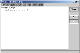
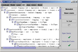
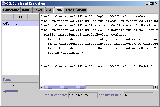

The Dresden OCL Toolkit is all about the Object Constraint Language (OCL). OCL is part of the well-known Unified Modelling Language (UML). It extends the UML's graphical notation with the possiblity of adding more formally defined textual constraints on method invocations and on class structures as a whole. Many aspects of a model that cannot be expressed adequately with the graphical notation alone find their representation in OCL constraints.
So, where does the Dresden OCL Toolset come into play? As its name indicates it is not some standalone solution. Instead, many of these tools are meant to be used as a library, integrated into other tools, but there exist also some standalone tools in the toolkit.
Work on the Toolkit started as early as 1999 when the OCL base library was first implemented in Java. Since the first version of the OCL compiler was completed alongside a Diploma Thesis, continuous work on and around the Toolkit has led to quite a considerable number of modules, which are now available.
The toolkit is enhanced and maintained mainly by students and scientific staff of the Software Engineering Group at Technische Universität Dresden, where the project is also coordinated. Contribution is however not restricted to this group so feel free to get in touch.
Although this is not a stand-alone tool there is a demonstration module coming with the Toolkit which helps to understand the way the Toolkit works. More screenshots can be found on our project's site on SourceForge.
|  |  |  |
| Enter OCL constraint | Parsing constraint results in Abstract Syntax tree | Automatically generating Java code for monitoring |
{kind=link}
{kind=link}
{kind=link}